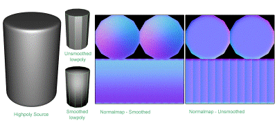
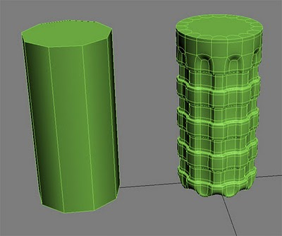
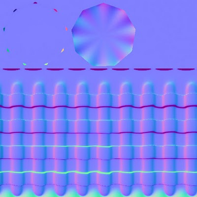
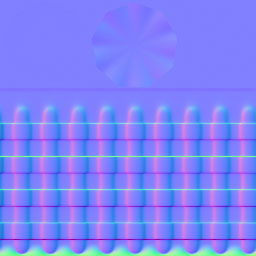

Normalmap法线贴图
观念的建立
什么是法线贴图**(Normal Map)**
法线贴图常常用在低解析度模型，伪装出高解析度的模型细节表现。法线贴图的每个像素储存了法线，法线就是一种向量，纪录了高解析度模型的表面斜度。红色、绿色、蓝色通道分别控制了每个像素的方向。
当你把法线贴图到用到低解析度模型，法线贴图上面的像素会控制了低阶析度模型的向量，造成了模型表面更多细节的假象。然而，从侧面来看，模型本身并没有改变。
贴了normal map的低模
没有贴normal map的低模
高模
切线空间（**Tangent-Space）vs** 物件空间（**Object-Space**）
有两种法线贴图，一种是切线空间，另外一种是物件空间。物件空间也被称做是区域空间，或是模型空间。世界空间基本上跟物件空间是一样的，只是世界空间需要模型维持他原始的转向，不改变旋转或是变形，因此世界空间这类型的法线贴图很少使用。
切线空间的法线贴图（**Tangent-space normal map**）
如上图, 主要会是蓝色的，物件可以移动，或是变形。很适合用在变形物件。例如角色、动物、旗子…等等。
· 贴图可以很容易被重复使用，例如不同形状的模型。
· 贴图也可以很容易做重复贴图tiled，镜像也很容易。虽然有些游戏引擎对镜像normal不是很支援。
· 很容易用叠合的方式绘制细节。
· 很容易进行影像压缩。
· 但是比较难避免来自低模vertex normals 的smoothing的问题。
物件空间的法线贴图（**Object-space normal map**）
如上图, 颜色是彩色的，物件能被旋转，但是不能有变形，除非修改shader让它支援可变形的法线贴图。
· 很容易产生高品质的曲率，因为它完全忽略了低解析度模型粗糙的smoothing。
· 效能上比切线空间的贴图要好，但是没有差非常多。
· 很难重复利用，不同的模型需要不同的贴图。
· 很难做tile，镜像也需要特殊的shader支援。
· 很难以图层叠加的方式来添加细节，绘制的细节必须要先转换成物件空间，才能正确地与物件空间的法线贴图叠合。
· 图片压缩效果不好，因为蓝色通道很难像切线空间的贴图一样，在shader里面重现，而且三个色彩通到包含了非常不同的资料，很难做压缩。如果压缩的话会产生很多的杂点，建议使用一半解析度的物件空间贴图解决这个问题。
不同类型的法线贴图之间的转换
法线贴图可以由切线空间转换成物件空间，反之亦然。
Diogo “fozi” Teixeira先生写了一个工具叫做— NSpace。它可以把物件空间的法线贴图转换成切线空间，在3ds max可以完美地运作。它利用3ds Max的硬体shader，相同的切线基础来做转换。为了要看到结果，透过Normal Bump map载入翻转的贴图，勾选”Show Hardware Map in Viewport”。Osman “osman” Tsjardiwal先生它写了NSpace的使用者介面，你可以到这里下载，只需要把这个跟NSpace exe放在同一个资料夹即可。Diogo先生还想替这个工具添加更多功能。
Joe “EarthQuake” Wilson先生说，8Monkey Labs 有个工具让你载入参考模型与物件空间贴图，然后载入切线空间的法线贴图，调整tile的数值，我们必须要载入模型才能知道切线法线的方向是否有误。大部分的状况是可运作的，但是常常会扭曲法线，因此你必须要把模型切成某种smoothing groups，然后才执行这个程式。然后我们才会合成这个混合的材质，套用在我Photoshop的原始图上面。
RGB**通道**
Shaders可以利用不同的技术来渲染切线空间法线贴图，但是法线贴图的方向通常是在游戏里面组成的，通常红色通道储存了X轴(通常是向左或是向右)，绿色通储存Y轴(向上或是向下)，蓝色通道储存Z轴(方向是自表面往外)。
切线空间法线贴图的红、绿、蓝通道
如果你发现光源角度错误，可能是因为法线贴图所指的方向，红色或是蓝色，指到了相反的方向。为了要修正错误，你可以改shader或是很简单地把相对应的颜色通道翻转，因此黑色的pixel变成白的，或是白的变成黑的。
有些shader 预期颜色通道会换，或是重整。为了要支援特殊的压缩格式，例如DXT5_nm通常会认为X轴在akpha通道Y在绿色通道，红色与蓝色是空的。
切线基础（**Tangent Basis**）
切线空间的法线贴图是一种特别的顶点资料，称为切线基础tangent basis。这跟UV座标很类似，差别在于切线基础提供了模型表面的方向性。它组成了相对于表面的座标系统，这个座标系统是以每个pixel的法线为基础储存在法线贴图里面。
光线Light rays是位于世界空间，但是法线储存在法线贴图里，用的是切线空间。当有贴normal-map的模型被渲染出来，光线必须要从世界空间切换成切线空间，这个转换要透过切线基础tangent basis。而射入的光线会跟法线贴图里面的法现做比较，这会决定每个pixel的模型要怎样被光线照明。有时候，有些shader不转换光线，但是转换法线贴图里面的法线。由切线座标转换成世界座标，然后世界座标的法线会跟光线做比较，来决定模型是否被照明。要用怎样的方法取决于你怎样写shader，但可得到相同的结果
不幸的是，对美术来说，有很多方法能计算切线基础（tangent basis）。3ds Max、Maya、DirectX 9、NVMeshMender、 Eric Lengyel等等方法。这表示用不同方法做出来的法线贴图，可能没办法在其它的应用程式里面正确地被渲染。美术必须要做点测试，才能知道怎样的参数最好，当算图引擎或是游戏引擎，渲染你的模型时，shader必须要跟你的法线贴图产生器采用相同的切线基础。否则，你会得到不正确的照明，尤其是在跨过UV的缝隙的地方。
xNormal SDK支援自订义的切线基础，当程式设计师使用xNormal SDK，把它导入到算图引擎自己的切线基础，美术使用Xnormal去做bake 法线贴图，就能够与算图引擎完全地配合了。
在低解析度模型上面的UVs与vertex normals会直接影响到切线空间的法线贴图的颜色，每个切线基础的vertex都是由三个属性结合的：mesh vertex的法线，受到smoothing影响、vertex的切线，通常是根据V轴贴图座标而来、还有vertex的双向切线，根据程式码而来，通常称为双向法线binormal。这三个向量会对每个vertex产生一个轴，产生一个特定的切线空间的转向，这些轴会被用在当被光线照射到的时候，由世界空间到切线空间产生适当转换。因此，你贴法线贴图的模型才能表现出正确的光照。
当三角的vertex法线是垂直往外的，那张法线贴图的pixel颜色会呈现中性蓝(128,128,255)，这表示pixel的法线会直接由低阶析度的模型表面垂直地指向外面。当pixel 法线是往左或是右偏移，它的颜色可能会比较红，或是比较不红，但是这要取决于法线贴图是怎样储存x轴的资料的，是定义成正的，还是负的。同理，当法线是往上或是往下偏，颜色会呈现的比较绿或是比较不绿，如果vertex normal不是完全跟三角面垂直的话，法线贴图的pixel一定会被染上颜色，而不是单纯的中性蓝。vertex normals与法线贴图里面的pixel normals最后会结合起来，构成最终的per-pixel surface normals。
Shaders的功能是利用法线贴图里面XY轴资讯来控制方向大部分的应用程式定义红色向右是+X，绿色向上+Y。但是3DSMAX是定义+X、-Y。这就是为什么常常会需要翻转绿色通道，才能得到正确的最后结果， 因为shader会定义特定的方向。
当模型上的共用边，是在UV空间上有不同的角度，在边缝的地方就会以不同颜色呈现，切线基础会利用这个颜色来对模型做照明。
当你查看角色的切线空间的法线贴图，通常会在UV边缝的地方看到不一致的颜色。这是因为UV shell通常会在mesh上面有不同的朝向，这是由3D模型转成2D贴图的必要之恶。角色身体的部分可能是垂直的shell，而手臂可能是水平的。因此在法线贴图上面的法线必须要扭转这两个不同朝向的UV shell，切线基础能够重新转向(扭转)光源。当光线射入到模型表面的区域空间时，当光照照应这个边缝时，看起来会很平顺。
当美术对模型的切线空间法线贴图进行tile时，例如地形，结果通常是正确的，因为模型具有统一的切线空间方向。如果模型具有连续的UV座标，或者法线贴图有很大的方向渐层，那切线空间就不会是统一的，因此地形表面可能会出线边缝。
低模（**Low-Poly**）的建模
游戏模型必须要很小心的最佳化，产生美丽的剪影，刻划出比较好的edge-loops。这样对变形的时候比较好，最小化极端的vertex normal改变。这样才能具有更好的shading。
为了要产生最佳化的游戏模型，例如好的剪影、好的loops产生好的变行动化。你可以添加第二级的subD细分，然后进行数位雕塑；或是直接用low-poly模型开始改，接着把edge loops塌陷掉，或是切出新的边、添加细节、或者你可以重新进行拓普。
UV**座标**
法线贴图烘培工具只会捕捉到在0-1 UV范围的法线，因此超出范围的会被忽略。
面向前的UV只有一份会在baking时后计算，如果你的mesh使用重叠的UV，会产生错误，因此在烘培之前，最好移除重叠的UV。
对称的UV (红色部分), 在烘培前偏移一个单位
如果你移除重叠的UV，然后镜像，最后产生的结果会一样。当然也可以不要镜像，对大部分的游戏引擎都没差，但是小心ZBrush使用UV偏移来管理模型的可视度，但是其实这也没太大差别。因为ZBrush cage mesh通常是跟游戏里面要做烘培的材质是不同的。
必须要避免在烘培法线贴图后改变UVs，因为旋转或是镜像UV，会造成法线贴图无法跟切线基础对应上去，这会产生光照的问题。
在3ds max里面，W是第三个材质座标。会被用在3D程序性材质，并且会储存UV通道里面的vertex color (你需要RGB的3轴，因此UVW可以储存vertex color) 。烘培问题可以把移动重叠的UV，沿着W轴移动到-1。这跟把重叠的部分在U或是V移动一个单位意思是一样的。Render To Texture这套工具总是会对W轴上面最高的UV进行烘培，然后利用W烘培可能会产生问题，因为这个东西通常是隐藏的，除非你可以地查看它，这对团队工作并不好。而且这个数值不会在输出的时候储存，高的W数值也可能会让UVs不好选取或是焊接。
镜像（**Mirroring**）
法线贴图能够用镜像的方式处理，产生对称的细节，这样可以节省UV空间。这样可以让你在法线贴图里面放置更多的细节，因为模型上的texture pixels变得更细致了！
如果是采用物件空间的贴图，镜像的法线贴图需要特殊的shader支援。如果切线贴图。镜像通常会产生shading缝隙，但是这个缝隙可以被减小或者隐藏，取决于你用的方法。
标准的镜像工作流程
\1. 把模型一半删除
\2. 整理剩下的模型的UVs，让它充满整个UV空间。
\3. 从镜像模型产生完整的模型，在边缝的区域把vertex焊接起来。
\4. 移动镜像的UV整整一个单位。
\5. 烘培法线贴图
烘培法线贴图
有时候，美术会想要在烘培之前删除模型对称的那一半。
这样做是错的，因为常常沿着切面开口的vertex normals会朝向开口处而另外一面也没有模型可以平均化这个法线这样会在法线贴图上产生明显的光线缝隙
最好的做法是用完全对称的模型来进行法线贴图的烘培，不要只用一半的模型。
避免对称的UV产生重叠或是烘培错误，把对称的UV移动到0-1 UV空间之外。因此只有一个非对称的UV在0-1范围内。
为了要避免texel在UV shell之间泄漏出来，请确认每个shell有足够的留边，包含延着法线贴图的边，每个UV shell都不应该在0-1UV范围内碰到彼此，除非你想要在贴图上呈现tile的效果。
这里再举另外一个例子,模型的一半先拆好UV然后用Symmetry做对称. (原文取自这里 )
这时候选取模型的左半部, 把左半部的UV 移到0-1的UV空间之外, 因为我们不希望因为对称的UV相叠而重复计算法线贴图
当我们用高模来产生法线贴图时, 左侧的法线贴图的结果是正确的
法线贴图是利用RGB值来让低模产生变形的效果. 在模型的右侧, 计算出来的法线贴图一定是正确的因为法线贴图就是根据高模的右侧来产生的. 但是对于模型的左侧计算出来的反线是相反方线, 因为左侧的模型是以symmetry产生的; 因此, 当法线会让模型往外凸时左侧的模型照里来说应该会往内凹(相反方向), 可是因为左侧的UV其实跟左侧模型正好是相反的, 因此负负的正, 最后的结果让两侧的模型贴上法线贴图效果是正确的 .
游戏里面的效果是正确的.
中央对称**(镜像)**
如果镜像的缝是在连续的模型表面上，例如人脸的中央，这可能就会产生光照缝
Epic Games的Unreal Engine 3 (UE3) 它们的对称模型通常就是采用中央对称。Epic的做法是利用另外一个法线贴图做为细节贴图DetailMap。这可以把镜像的缝隙，diffuse/specular的光照分散开来。而光照模型的话，Epic有一种技术可以几乎把镜像缝完全消除。
左图的detail normal map细节法线贴图能够把右图的缝隙, 巧妙地隐藏起来
偏移对称（**Offset Mirroring**）
偏移对称是一种方法，这样让你的缝隙不会出现在正中央，例如角色的头。UV缝可以放在耳朵。从那个地方产生UV缝。
这可以避免罗夏效应（Rorschach）。因此可以产生非对称的细节，但还是可以节省空间，因为头的两侧还是可以对称，但是对称面不会同时被看到。
镜像偏移不会把边缝移除，但是可以把缝隙移到比较不明显的位置。
平色镜像（**Flat Color Mirroring**）
这里教你怎样用手绘的方式把镜像的切线空间法线。用手绘的方式涂上平色的法线，用的是中性蓝，但是这只能用在垂直或是水平的UV缝，不能用在任意角度的UV缝，这样可以移除沿着镜像的缝隙。
元件对称（**Element Mirroring**）
对称的缝可以完全地避掉，如果你在对称中心不放置模型的话。例如，如果你把一个detached的模型放在中心的位置，这个模型就可以独立地设定贴图，而两侧的模型还是可以进行对称，不论对称的模型是否共用vertex normals。有了非对称的元件，就不会出现任何的缝了。
望远镜中间的元件，以红色显示。是一个独立的非对称UV，让整个模型对称但是完全不会有缝隙。
Smoothi**ng Groups** 与硬边
每个模型上面的每个vertex都至少有一个vertex normal。vertex normal会用在控制三角面的方向，控制光照个结果。如果法线是朝向光线，那三角面就会被完全地照明；如果背对光线，那三角面就不会被照明。
但是每个Vertex，能够有超过一个vertex normal。当共用边的两个三角面有不同的vertex normals时，会产生shading缝隙，称之为模型的硬边（hard edge）。3ds Max的Smoothing Groups能够产生硬边与软边，Maya则是利用Harden Edge与Soften Edge来控制。这些工具都能产生硬边与软边，经由分裂或是合并vertex normals。
硬边会在vertices产生多个法线
当模型完全地使用软法线(单一个smoothing group)，光线会对差异极大的vertex normals进行内插。如果你的算图引擎跟烘培器（baker）不使用相同的切线基础的话，会产生shading错误，所以要尽量避免极端的vertex normals差异，才能避免这个问题。
硬边对于模型本来就有的缝是最好的。例如，你可以沿着车胎的框添加硬边，避免轮胎模型扭曲车体。机械性的模型通常会使用硬边。
对大部分的模型，最好是在UV缝的地方添加硬边，这个没有绝对的解决方法，你必须要尝试出最适合你游戏的方法。
当你使用物件空间的法线贴图时，vertex normal的问题就会消失，你不再依靠模型上面的原始vertex normals。物件空间的法线贴图会完全忽略vertex normals，物件空间的贴图让你使用所有的软边，在低解析度模型也不会有bevel，也不会出线光照错误。

低模有设定smooth group与全部设为硬边,产生不同的法线贴图. (图文取自这里 ,作者Ariel Chai)
使用**Bevels**
Bevels/chamfers能够改善模型的剪影而且能产生更好的反射高光。
但是bevel常常会产生很长的三角面，会降低游戏里面的算图效能。即时的算图器往往对于狭长的三角面会有问题，因为这会产生很多算图的sub-pixel的区域。
Bevels也会让vertex count数值大增这能会让位移的时候耗费很多效能与记忆体硬边也会增加vertex count 但是对于共用UV空间的边缝不会增加vertex count 请看以下文章
跟bevel相比，使用硬边，而且让UV shells能够稳合，通常能够产生较高的效能与美丽的结果
如果没有做bevel, 但是有设定smooth group, 用不同的显示模式: 3ds max的硬体显示, xNormal与raytrace算图的比较. 很显然3dsmax的normal map即时显示效果不好!
若是对低模做了bevel, 就算是用3ds max的硬体显示, 也能够有好的效果
]
低模没有设定smooth group, 在即时显示的时候, 右边的那个box出现怪异黑色线条. 请看下图说明原因
主要是因为你的UV都拆在同一块, 相接的地方因为法线方向不一致, 所以才会出现怪异的黑边.
解决之道是把UV拆开成独立区块, 如此就不会出现怪异黑边.
举另外一个例子,由kodde先生所提供(原文请点这里 ):
这里比较对低模有加bevel, 或是设定smooth group产生normal map贴回低模后, 效果比较. 由左至右为: 高模, bevel的低模, 全部硬边的低模, 全部软边的低模.
很显然有做bevel的低模
[
- 全部硬边2. 全部软边3. 有做bevel, 3的效果较佳, 缺点是耗费比较多的poly数量.
如果还是不清楚为什么会这样,以下CryEngine Mod有很好的图示:
如图所示, 橘色为低模, 蓝色为高模. 当计算法线贴图时, 由低模发射出的射线跟高模有交错点(红点)
但是这样产生的normal map效果不好看
这里跟上图类似但是把高模往外推. 没有设定smooth group与bevel以前, 低模的射线会有死角(deadzone)
因此计算出来的法线贴图原角的边缘非常不明显
如果把低模设定全部为一组smooth group, 射线在圆滑处与高模有比较好的交错点(红色小点)
这样产生的normal map效果很不错, 但是有一个缺点是从很极端的角度来看边界会有奇怪的亮光.
最后, 加了bevel同时也设定smooth group. 射线与高模有很好的交错点
 ]
]
得到了很棒的normal map, 在极端的角度观看有不会有怪异的亮光.
编辑**Vertex Normals**
如果你使用bevels的话，藉由编辑vertex normals， 让大面积的平面具有垂直的法线，shading结果会改善。vertex normals通常会强迫跨过小的bevel面，而不是跨过大面积，请看以下教学：
有bevel的模型会让法线偏向
建立高模**(High-Poly)**
SubD建模与数位雕刻，是大部分用来产生法线贴图的相关技术。
有些美术比较喜欢先建出游戏模型(低模)，有些喜欢先建高模，有些则是介于两者之间。顺序其实是由个人自己取决。三种都可以产生很棒的结果。
· 先建立出游戏模型，然后提高解析度，然后再雕刻。
· 建立高解析度的模型，然后据此建立出游戏模型。
· 建立基本模，然后提高解析度来雕刻它， 同时降低解析度再修改到变成游戏模型。
如果游戏模型是从细分表面雕刻而来，建议可以把某些edge loops，切割添加或是移除，来达到模型最佳化。
斜面的**Extrusions**
在高模进行Extrusions，它的斜面最好做的明显一点，这样才能产生较好的法线贴图。
mental ray Round Corners Bump
mental ray算图引擎会自动地产生bevel的算图效果，称之为Round Corners Bump。这也可以bake到法线贴图里面，在3ds Max、Maya与XSI都能利用此功能。
Jeff Patton贴了一篇有关于如何把Round Corners Bump功能撷取出来，让你可以套用在其他材质上。
Michael “cryrid” Taylor 写了一篇在XSI里面利用Round Corners的功能。
XSI可以把这个效果成功地烘培到法线贴图上面，但是3ds Max似乎会不正确地烘培。Maya则是完全不能烘培，可能是要把.mi shader改成正确的座标系统max就会变正常了。
上图左右都是同样一个模型,左边那个有套用Mental ray round corner的shader,会在算图时产生bevel的效果. (原文取自这里 )
烘培**(Baking)**
根据高模进行的法线转换到低模，称之为烘培。这个烘培的工具通常根据某段距离自低模投射出来，发射出射线到高模，当这条射线跟高模交错，它会纪录模型的表面法线，储存在法线贴图里面。
为了要理解这些选项会怎样影响你的法线贴图，先用简单的box来做测试，然后很快速地实验UV mirroring、smoothing groups等等。这会让你了解设置参数。
反锯齿（**Anti-Alias****ing**）
开启超级采样或是反锯齿(或是multi-ray casting)，能够帮助你修掉当高解析度模型跟自身重叠，重叠在低模的UV边界以内，产生的锯齿边。不幸的是，启动反锯齿会算的比较慢，也比较耗记忆体。
没有开启反锯齿就去烘培材质会在高模模型重叠的区域产生锯齿错误
一个小技巧，就是算图的时后计算原图的两倍大，然后在Photoshop里面缩小。这个缩小的动作会进行pixel重新采样，在缩放以后，确认贴图有re-normalize。因为如果没有这样做会产生很多小的杂点，Re-normalizing可以利用NVIDIA的法线贴图滤镜来做。
3ds Max的超级采样处理edge padding效果不好，会在留白的pixel间产生黑色的长条，如果会出现这样的问题话，先关掉padding选项，然后之后再做padding。重新baking，不要勾选超级采样，或是利用Photoshop滤镜来处理。
烘培透明度（**Baking Transparency**）
有时候你需要从物件烘培法线贴图，这个法线贴图要用在透明度控制，例如带有透明度控制的树叶。很不幸地，烘培的软体会完全忽略你高模的透明度。
正确的光照设定产生完美的透明度
为了要解决这个问题，对模型的上视图进行渲染，这只对当你对低模使用平面的UV投影，计算切线空间法线贴图有用。
请确认上视图长宽能与低模的planar UV投影尺寸相符，这对等角摄影机的精确放置会有帮助，高模则需要套运特别的照明或是特殊的材质。
(1)以下教学有提到照明设置
直接在3D应用程式里面建立法线贴图
用3D软体产生高品质的法线贴图
绘图技术顾问Xbox游戏内容与设计团队
(2)material shader也可以做到相同效果但是不需要打灯
NormalTexMap 这是一个用3ds Max脚本产生的贴图
InfoTexture贴图外挂
由上往下的光照环境设定
边界留白（**Edge Padding**）
如果法线贴图的边界没有留边，会在UV边界的地方产生缝隙。
粉红色是模型的材质区域黑色是背景区域.当游戏在进行时,为了要让材质显示更平顺会套用filter到材质上面称为down sample降采样.如果背景区域的颜色跟材质本身的颜色差异太大将采样产生的mip可能会吃到黑色背景区域. (原文连结请点这里 )
因此在画材质或是产生法线贴图时要设定padding (留边) 避免上述状况
高模材质
如果高模套用了mental ray Arch & Design material材质，那么3ds max就无法正确地产生法线贴图，如果法线贴图的结果是全黑，那就改用Standard材质吧。例如这帖有讨论到的：
Reset Transforms
在烘培之前，请确认你的低模的位移形变已经重置了。这点很重要，通常建模的过程中，会进行旋转与缩放，但是这些会产生大量的区域座标空间local “space” 。而这样会很容易产生法线贴图的算图错误。
解决交错的模型
投影的过程通常会产生遗失、重叠、交错
而高模的自身交错让要产生干净的法线贴图变得十分困难，通常会出现在手指附近，把ray distance设定的太高会导致拾取到其它的手指，太小的话在低模与高模距离较远的地方会出现问题。
还好有几种方法可以解决这类的问题
\1. 改变cage的形状，手动边即投影cage的点，能够帮助你产生更好的cage，能够更紧密地包覆住手指。
\2. 用材质来限定投影或是UVs
\3. 把模型炸开，请看这帖讨论栏
\4. 用不同大小的cage来进行烘培，然后在Photoshop结合起来
当烘培时随机产生的像素错误
如果你采用3ds Max的『Render To Texture』的功能，来进行烘培的话，你可能会发生随机的杂点，这只会当你使用原本的模型来做投影，而这个模型用了不同的UV通道的时候。
在烘培法线贴图时产生的随机像素错误
有两种方法解决
· 在复制的模型上添加push的修改器，把数值修改为0.01
· 在算图设定的地方关闭滤镜，避免反锯齿你也可以在Global Supersampler关闭反锯齿。
波浪状的法线贴图
当你为圆筒状模型进行法线向量计算时，低解析度与高解析度之间会产称波纹状的法线贴图，有很多方法可以避掉这个问题。
\1. 很简单只需要修改cage的形状，这样改变rays的朝向，在最下面的法线贴图教学里。Ben “poopinmymouth” Mathis展示如何在3ds max里面达到上述动作， 相同的方法如下图：
\2. 细分低解析度模型，让它尽量稳合高解析度模型。Jeff “airbrush” Ross在这个教学影片有解说如何在Maya里面做这个效果。
\3. 把波浪线涂抹掉，由Ben “poopinmymouth”写的法线贴图教学，Mathis介绍了一个教学如何把波浪的法线贴图用涂抹的方式涂掉。
\4. 使用独立的平面投影方法用来捕捉筒状区域的细节，因此ray-casting会更平均例如要添加轮胎的胎纹，胎纹可以由一条平的模型产生，然后在2D绘图软体里面以图层方式叠合上去。
\5. 调整cage的形状，让扭曲的法线贴图消失
调整cage的形状就可以产生没有波浪纹的法线贴图了

左图为低模,右图为高模(本例得原文请点这里 )
这是在max里面预设的低模投射到高模时cage的模样, 很丑

产生的法线贴图有明显的波浪纹
左图贴上法线贴图的低模与右图相比有明显的波纹
这是因为在计算法线贴图时的射线扭曲的问题(红色)
有一个很简单的方法可以解决那就是Reset cage. 但是会出现上图的错误, 法线贴图被剪切掉了. 因为cage没有把高模包起来

Reset cage后把cage 原柱的上下两个盖子往内推最后就可以得到正确的法线贴图
三角化
在烘培以前，最好要把低模先三角化，由polygons转换到纯的三角面，这样避免之后的vertex normals 改变，产生奇怪的高光。
当四边面在Modo里面转成三角面时，内部的边常常会翻转，造成shading结果的不一致。
有时候烘培工具或是模型的输出/输入会把多边形重新三角化， 一个四边面的多边形，其实是两个三角面，内部的边(对角线)是可以改变方向的，当四边面的点被移除时，软体对多边形模型的演算法会试着维持四边面表面合理的非重叠形状，这是藉由翻转内部的边(对角线)达成的。
高光会受到三角面的影响，翻转对角线可以修正错误，请看这篇说明文
处理**Cages**的问题
Cage对法线贴图处理有两项意义：一是对低模而言是用来细分模型表面所用，二是用来计算法线贴图的ray-casting模型。以下是谈到ray-casting cage.的主题。
大部分的烘培工具提供您distance-based raycast工具，ray (射线)会沿着每个vertex normal朝外，在设定的距离里，设定射线投影回来的距离，当射线与高模交错时他会对那瞬间的法线采样。
硬边与有距离范围的射线(distance-based raycast) (灰色的区域)，会造成射线(黄色)遗失，还有射线重叠(蓝色)。
灰色区域则是完全使用软边soft edges，能够避免分岔的法线产生ray-casting的错误。
很不幸地，用了distance-based raycast的方法，分岔的vertex normals会造成烘培的高模部分移失或是边缝的问题。
有些软体让你使用cage的模型，这基本上就是把低模膨大，这样就会自每个vertex往回raycasts。这样会自cage产生膨大的模型。
绘制**(Painting)**
不要害怕在Photoshop里面编辑法线贴图，毕竟法线贴图本身也是一张贴图，因此你可以复制、模糊化、混合等等操作。只要最终效果是好看的就好了，对于法线贴图处理颜色的了解会帮助你有有效率地绘制法线贴图。
利用高解析度模型来产生的法线贴图通常会比用材质做出来的好，因为你是真的自精确，高模来截取适当的法线，这表示法线贴图的像素基本上就是重现了高模的表面细节，因此可以获得非常逼真的效果。
如果你是利用一张贴图来产生的法线贴图，结果可能看起来很平，或是得到完全不能用的法线贴图。如果你没有调整到适当的数值范围的话，大部分的法线贴图产生软体会假定输入的图是heightmap，其中黑色是最低点，白色是最高点。如果你想要把手绘材质选换成法线贴图，结果会非常不好看，最好的办法是从高模产生一张具有大，中细节的法线贴图，然后再利用相片产生的法线贴图来处理模型最细微的表现，例如纤维、刮痕等等。
有时候，预算无法负担由高解析度模型产生法线贴图，例如角色或是主要环境资产还是要以高模产生法线贴图，但是对于比较不重要的环境原件，从heightmap产生的法线贴图就很够用了，也不需要花太多时间来处理。
平色**(Flat Color)**
平色(128,128,255)会产生一个完全垂直于模型表面的法线，只要vertex normals也是垂直的话。请记住，法线贴图的每个像素的法线会从vertex normals，产生每个像素的法线偏移，如果你希望法线贴图的某个区域是平的，那就产生没有偏移的vertex normals，采用128,128,255的颜色就可以。
这当你在镜像法线贴图时，并采用反射渐层时特别明显，反射通常会把法线的角度强化出来，因此法线的错误就会更明显。
镜像的法线贴图，当你使用(127,127,255)的颜色会产生缝隙，要用平色128的效果比较好。
在逻辑上，127似乎才是真正介于0-255的中间数值，但是实际上在用的时候，128才比较实用，当你用(127,127,255)或是用(128,128,255)来绘制时，很明显的127会产生法线的弯曲，而128才能产生完全平的颜色。
这是因为大部分的游戏流程使用unsigned normal maps，更多细节请看这里。
把两张法线贴图叠在一起
把两张法线贴图叠在一起，可以很快速地添加模型细节，例如皱纹、裂痕等等。细节能够用height map绘制，然后用转换软体产生法线贴图，这样的细节法线贴图可以与用高模产生的法线贴图叠合在一起。
以下是四种混合的方式，请注意预设值是采用CrazyBump (强度50 33 33)，但是软体本身使可以让你调整任意强度的，在混合之后又重新标准化贴图（re-normalized）一次。
上图用了四种混合模式
\1. 由Ryan Clark撰写的CrazyBump软体，是采用3D空间来计算法线贴图的混合，而不是用2D，这是保留细节最好的方法，而且每个图层强度可以个别修改。
\2. 在Photoshop里面进行法线贴图的混合，正值是Linear Dodge；而负值采用Difference mode，结合了Photoshop Action来加速合成动做，这是免费的，但是跟CrazyBump相比比较不精确。
\3. 由Paul “paultosca” Tosca制作的Making of Varga，把法线贴图混合在一起，对红色与绿色通道以Overlay模式混合，绿色与蓝色通道用Multiply混合，这产生的混合效果会比单纯用Overlay的效果要更强烈。Leo “chronic” Covarrubias在这里有一步一步的详细教学：
\4. 由Ben “poopinmymouth” Mathis做的Normalmap Deepening 说明利用Overlay模式产生的法线贴图混合，CGTextures的教学里面说明了Scott Warren如何利用多图层来产生法线贴图。
由Nvidia-filter normalizing产生的灰阶图可以产生很好的height map。Polycount 论坛上面有提到不同的混合选项，请看2D工具的章节：
预先做好的图库
你可以建立一堆做好的形状，之后可以取用，这样可以节省法线贴图的制作时间例如螺丝、管线等等装饰物，这些形状会以bipmap储存，带有透明度，因此可以用图层的方式与法线贴图做混合。
重新标准化法线**(Re-normalizing)**
重新标准化法线表示重设每条法线的长度到1的范围内
法线贴图shader利用三个颜色通道产生每个pixel的法线长度与方向，这些法线会影响模型在场景里面的光照，但是如果你用手绘，或是混合多个法线贴图的化会改变法线的长度。大部分的shader只会认法线长度是1，但是有些shader会动态地去进行重新标准化法线，例如3ds Max的硬体shader。
如果你的法线贴图没有标准化(normalized) 而且显示的shader也没有重新计算法线的功能，那你可能在模型显示的时候看到许多错误，高光会产生很多杂点表面会出现许多怪异的阴影，为了要解决问题。你可以使用NVIDIA的法线贴图滤镜，提供了很简单的重新标准化法线re-normalize的功能，只要勾选Normalize Only就好了。Xnormal也有提供相同的Photoshop滤镜。
NVIDIA的法线标准化的选项
有些shaders会压缩法线贴图，通常会把蓝色通道完全地舍弃，因此是即时的重新计算，但是shader必须要重新标准化法线，才能建立资料，因此客制化的法线长度会完全地被忽略掉。
把AO(Ambient Occlusion)算到Normal Map里面
虽然shader可能不会对法线贴图进行标准化，但是AO 却真的可以烘培到法线贴图里面，这会让模型表面的缝隙的法线长度缩短，造成该区域接受到较少的光源，这可以用在diffuse与高光或是其他任何使用法线贴图的通道，例如反射通道。
为了要把AO烘培到法线贴图里面，首先调整AO图层，让黑色区域低到恰好与128的灰色相同，然后把AO图层设定为Darken mode，这会让法线贴图的法线变短。让该区域的表面获得更少的光线，产生更暗的光照。
这个技巧不能用在具有标准化法线功能的shader，例如3ds Max的硬体shader 。必须要修改shader才能让它真的吃到你客制化的法线。大部分的shader都假定法线长度是1，因为这样的程式码比较好写， 而且这个技巧不能用在大部分的法线贴图的压缩格式，因为这类压缩都会舍弃蓝色通道，然后重新计算shader 这是一个标准化法线的必要动作。
想要有最好的结果，通常把AO跟color map做multiply，而不要把AO混到法线贴图里面。
逆光**(Back Lighting)**的状况
你可以客制化法线贴图，产生有趣的效果，如果你蓝色通道翻转，法线就会朝反方向去，因此会模拟出逆光效果。
模拟出树叶的次表面散射效果
这是树叶的贴图，第二个diffuse很简单地把颜色反转，偏移了hue，180° 调整饱和度。
树叶用了shader，然后用了两种不同的diffuse shader贴图：一个使用正常的切线空间法线贴图，另外一个用相同的图，但是反转了蓝色通道，这会造成背面的叶子只会被背面的光线所照明。树叶的模型是双面的，但是两面使用相同的shader 因此这效果可以用在任一角度的光线，还有另外一个优点，因为树木开启自身阴影计算，树叶的影记不会接受的直接照明，因此背面不会显是翻转的法线贴图，因此就可以造假出当光线直接打到树叶时才会有的透光效果(SSS)，这对整个森林不能用，因为自身阴影与双面法线贴图太耗效能了，但是可以用在重点物件或是用在有做LOD的树木，在远方会切换到效能比较好的shader。
Shaders**与缝隙**
必须要使用正确的shader才能避免在UV断点的地方看到缝隙，shader必须要跟烘培前的状况使用相同的切线基础（tangent basis）。如果不是的话，光照结果不是对于跨UV边界的地方不一致，就是平滑面出现错误。
当你在Xnormal里面，就可以正确地显示产生的精确法线，SDK也可以让你自行撰写自己的切线空间产生器。
3ds Max Shaders
3ds Max 2011里面的Render To Texture功能，与老的切线空间切图，能够用scanline正确地渲染出来，但是如果用3ds Max shaders不能在萤幕上即时正确地显示。Max算图与即时显示用的是不同的切线基础，这个问题在你使用非有机的硬边模型的法线贴图尤其明显，smoothing的错误会显示在萤幕上，但是算图的时候不会出现。
当你使用Render To Texture产生的错误可以藉由Christoph ‘CrazyButcher’ Kubisch 与Per ‘perna’ Abrahamsen所写免费的”3Point Shader”来解决，这样shader就会跟烘培的工具使用相同的切线基础，所以可以产生几乎没有错误的法线贴图，用在旧的法线贴图上也可以。
你可以在Max萤幕上看到在maya里面烘培的切线法线贴图，效果还算ok。在萤幕显视硬体贴图，在标准材质中载入，启动Show Hardware Map in Viewport。另外一个方法是使用Render To Texture来烘培物件空间的法线贴图，使用Nspace把他转换成切线空间贴图，载入DirectX material与采用RTTNormalMap.fx shader。
绝对不要相信**3ds max萤幕上显示的normal map**效果 (原文请点这里 )
由上往下分别是: 在maya里面产生法线贴图然后在max里面显示; 在Maya里面产生法线贴图然后在maya里面显示; 如果是在max里面产生法线贴图(利用scanline) 然后在max里面显示看到那恐怖的三角面了吗?
Max里面用scanline计算出来的法线贴图
Max里面用Mental ray计算出来的法线贴图(请忽略反锯齿的问题, 为节省时间没有启用反锯齿)
Maya计算出来的法线贴图
Autodesk知道这个问题，并且计划在下一版修正这个问题。
比较Maya与Max与客制化的code产生的法线贴图与即时材质显示的问题
Christoph “CrazyButcher” Kubisch 与Per “perna” Abrahamsen写了一个特别的shader/修改器，来修正这个错误，请看这个讨论串：
3 Point Studios这个法线贴图显示工具可以修正3ds max的问题
3ds max 2010不同的显示方式的比较
3ds Max**编辑法线的技巧**
在烘培之后，如果你在你的贴了法线贴图的低模上面加了edit normal的修改器似乎会让vertex normals比较松产生比较精确的萤幕显示效果
你也可以把修改器塌陷掉如果你想要的话
Maya Shaders
Maya能在萤幕上面正确地产生法线贴图有正确的切线基础跟3ds Max相比也比较不会有smoothing的问题
由Brice Vandemoortele与Cedric Caillaud所写的BRDF shader 这包含了物件空间的法线贴图浮雕贴图自身阴影且确认Maya plugin manager使用有cgFX shaders 然后你就可以依此产生Lambert, Phong等等关闭高品质算图才能在萤幕上正确地显示
如果你想要使用软体算图引擎使用mental ray 但是不要使用Maya的软体算图因为mental ray能正确地解读切线空间的法线而Maya算图器会把法线贴图视为灰阶的bump map 产生难看的结果Mental ray支援Maya的hong shader 虽然它不认得插在”cosine power里面的gloss map 拉杆还是可以用地如果你不介意gloss有统一的数值Spec maps也还能运作在萤幕上使用相同的设定最好把贴图储存成TGA 格式
法线贴图的压缩
法线贴图会吃掉很多记忆体，压缩可以压到原本的1/4大小，因此你可以增加解析度或是放更多的贴图。
通常的压缩法是把蓝色通道丢掉，因为这个可以用最小的资源在shader编码里面重新计算，bitmap只会储存两个颜色通道，而非四个(红色绿色蓝色与alpha)。
这篇关于即时法线贴图压缩格式DXT Compression，从id software与NVIDIA是篇很棒的文章：
DXT5nm**压缩**
DXT5nm的压缩格是跟DXT5是一样的，除了把红色通道移到alpha通道。绿色通道不变，红色与蓝色通道填充相同的实体色。这样的安排称为swizzling。
绿色与alpha通道被采用的原因是DXT的压缩格式在红色与蓝色通道会用到比较高的bit深度，红色与蓝色会用相同的实体色填充，因为DXT会采用压缩系统比较不同颜色通道，如果你试着要储存红色或是蓝色材质、高光、高度贴图，这样的压缩会产生更多的压缩错误，因为他会比较所有的三个通道。
NVIDIA DXT压缩选项能够帮助降地压缩错，如果你想要添加材质到红色或是蓝色通道如果你不把红色或蓝色通道放空，产生的错误会更多。但是可能优点大于缺点，可以看看在NVIDIA研发论坛上面的讨论。
DXT1的压缩
DXT1有时候会用在切线空间的法线贴图上面，因为他是DXT5大小的一半，缺点是他会产生很多压缩的缺陷，所以后来很多人就没有用这个压缩格式。
3Dc**压缩**
3Dc压缩又称为DirectX 10的BC5压缩，它跟DXT5nm很类似，因为他只储存X, Y通道。差别是他会储存跟DXT5 Alpha channel相同的通道，跟DXT5nm的绿色通道相比会稍微高一点的bit深度，跟其他演算法相比3Dc能够产生最好的结果。不需要处理时间或是特殊的硬体。
A8L8**的压缩**
DDS 格式A8L8并没有真正的压缩，只需要两个8bit灰阶通道，每个256灰阶这会让你避免使用三个颜色通道。但是shader必须要重新计算蓝色通道才能正常的运作，但是A8L8并没有节省到任何材质记忆体，它只是在送给显卡的时候转成四个通道的32bit材质。这个格式的唯一优点是减少硬碟使用空间。
标题: Maya > NormalMap > UDK 工作流程
翻译: Hammer Chen
crapageddon: 有没有人可以解释我哪边做错了？
我想要把我在maya高模，用低模贴法线贴图，放在udk里面。几乎要完成了，但是在udk里面模型看起来一团糟。我自认为我步骤都做对了，有没有人可以指出我哪边做错了，这边我很快速地做出骷颅头，当作练习的范例。
以下是我的步骤
\1. 建立高模
 ]
]
\2. 建立低模
利用高模产生产生低模，并确认模型没有突出。
3 .UV分布图
把UV分布图弄整齐，不重叠。
4 -建立法线贴图
我是用Transfer Map来产生法线贴图。
5 - 产生法线贴图与套用法线贴图

没办法完全呈现高模，但是堪用。
\6. 多的UV组

我读了这篇它说UDK需要另外一组UV，所以我就另外做了。
\7. 透过Actor X输出模型

我用Actor X输出低模，勾选”Obey Hard Edges。这样对吗？
8 - 把模型输入到UDK
用以下设定

9 - 输入diffuse map
由Maya 透过Transfer map转成TGA

10 -导入法线贴图
我是用以下设定，正确否？

11 - 建立材质

Diffuse用在diffuse与specular通道，而法线贴图就放在normal通道。
12 - 把材质套用到模型上面
以下就是套用完材质后的模型


13 - Light map 座标资讯


我发现我之前的uv没有显示，我乱调了一下参数，但是还是没有改善。

有没有人知道怎样修正这个错误
我哪边做错了？
有更好的办法吗？
danimal回答:
请进行以下步骤，不要说他妈的我模型爆烂这样的借口：
\1. 不需要多个UV set因为你原本的UV没有叠在一起。
\2. 如前面所提，不要像用在有机模型上面把UV切割成很多块，你每UV多一块就会在模型上面产生硬边，因此模型到最后就会产生一堆边缝，超丑的。
\3. 不要用Transfer Maps的功能。下载xNormal来用，这是免费的，产生的品质绝对会比Maya要好，而且速度快一百倍。
\4. Maya的功能，xNormals也一样，会产生翻转的绿色通道。你必须要到photoshop里面把绿色通道翻转，因为我个人强烈建议使用xNormal，有一个选项打开后让你可以在UDK里面正确显是绿色轴向，这样你就不需要在photoshop里面翻转了。
\5. 你还必须要要设定低模的smoothing groups。我建议你就直接对这个低模骷颅头，设定一个smoothing group，全选Normals，Soften。
\6. 请注意如果你把整个低模设定成Soften。UV岛的边界会自动产生分裂的点，因此，就会有缝隙。但是目标是要把缝隐藏，我建议沿着骷颅头背面切割，拆UV。
\7. 在第六步骤，你可以得到更好的法线贴图。选取UV边界的地方，把它硬边化。因为在引擎里面这些边会是硬边，换句话说，在产生法线贴图的时候，是用完全smooth的低模来产生，但是接着选取UV shell的边界边，把它硬化，比较两个步骤产生的法线贴图，看看哪一个效果比较优。
\8. 在导入UDK里面的时候，导入ASE。对bSingleSmoothGroupSingleTangent这个参数开启或是关闭，比较一下效果差异。
\9. 没确，你的第七步骤设定是对的。应该没问题。
\10. 你输入法线贴图的设定是OK，但是我建议你在做测试的时候，勾选NormalMapUncompressed 。这样法线贴图就不会压缩，你就可以看到最佳状态好比较差异，另外也别忘了设定LOD group。
\11. 当设定材质，不要用Texture那一个模组，建议用Texture里面有一个专门给法线贴图取用的模组。（译者注：找不到这个模组, 应该是旧功能）
\12. 最后，就像之前所提到的，我会对低模再添加更多细节。如果模型很远的话没关系，但是很近的话添加细节是必要的。
基本上你需要很多试误的过程，我以前也遇到很多问题。整理以下重点：UV是最重要的，因为UV shell会影响你的硬边，还有缝隙的问题。要注意smoothing groups的设置，这也会影响到在引擎里面是如何设置的，你的法线贴图如何被渲染出来，你会得到完全不同的结果，如果你的低模的smoothing groups设定的不一样的话。
—翻译完毕—
—以下为另一篇翻译—-
原文请点[这个连结](http://wiki.polycount.com/3DTutorials/Modeling High-Low Poly Models for Next Gen Games?action=show&redirect=3D_Tutorials/Modeling_High-Low_Poly_Models_for_Next_Gen_Games)
标题**:** 次世代游戏高模与低模的建模技巧
翻译**: Hammer Chen**
作者: João ‘Masakari’ Costa
身为制作次世代游戏的美术，或是做游戏的mod，建模越来越复杂了。每天都会出现新的技术，而旧的技术也还没摸熟。今天，我要来谈谈建模，建立次世代游戏的资产(UE3、CryEngine 2等)。我会强调法线贴图的产生，但是这个教学并不是专注在如何在你的3D软体里面产生法线贴图，毕竟这有很多软体要提，这篇教学主要是从建模的角度切入，根据模型的细节产生法线贴图，哪些方法可行，哪些不可行，我会利用Daedalus HK模型当做范例。
\1. 前置作业：评估。
有一件是你要知道，就是不是所有的细节都要建高模，尤其是在UV图的解析度很低的时候。有很多小细节，例如螺帽、凹陷、面板、刮痕、小洞等等的，都会由高模转低模产生法线贴图的动作，失去了细节。你必须要事先想到哪些是小细节，哪些是必须要实际建模出来的。还有请记住你的高模不是要用在电影等级或是只要算图好看就好，最重要的是最终在游戏里面的效果，因此针对游戏你可以把某些细节夸大或是减低，这样能够更容易产生好的法线贴图，这个阶段要快速想过，你可以使用不同的技术，最终的结果才是最重要的。
\2. 前置作业：取得法线贴图与修改
就像2D美术需要很多参考图库一般，今日的3D建模师也需要建立很多的模型库：细节、3D材质、笔刷，才能加速工作流程。经常学习新的script工具，很重要；经常地学习新技巧，改善现有的技术，学习并累积经验，加强技术等级与速度。在根据高模产生法线贴图后，不要害怕修改或是添加细节，有扎实的传统美术基础很重要。毕竟，你可能会成为顶尖的建模师，如果你Photoshop技巧很烂的话，就不能自己会制材质了！
必要工具/参考
\3. 前置作业：聪明地工作(work smart)
这应该大家都知道，但是很多人没有这样做。不要懒得管理生产流程，最佳化你3D软体的选单、快捷键。这样你就可以加速你工作的速度与效率，把你最常用的工具摆在最显眼的位置。对的工具用在对的地方，要做有机模型的细节的时候不要害怕切换到Zbrush/Mudbox，在photosho里面增加凹陷、刮痕、小螺丝、小洞；利用deepUV来放松最终的UV。如果你的模型还没有设定动画，请确认模型可以用在动画制作上，要不然调动作的会很不爽！当你在处理UV贴图的时候，要考量到模型里面哪边会被常常看到， 哪边比较不常看到，具此调整UV大小。请不要懒惰不做这件事。最后，如同Jon Jones所说：『失败是好事』。不要害怕心的事物，尝试用新的方法来达到最佳化的结果。
用图层管理可以节省资源, 有效率地工作
\4. 实做阶段：高模
请记住，你不是在做什么美术旷世巨作。高模的唯一目的是要让低模能够具有高品质的细节，不用担心高模的模型拓普不够完美，不必担心高模一定要一整块的模型。有些组件可以是独立的一块，尽量把模型外推，减小/夸张化细节，这些目的都是要产生高细节的法线贴图，不必担心高模内部乱七八糟，最重要的是外部的shell。因为外面才会影响到法线贴图的计算！
Smooth 的边对法线贴图的产生十分重要，为了要减小低模的硬边，这样才能产生美丽的高光效果。不必担心小的错误或是杂点，这些可以很快地在photoshop里面修掉。
除了把边界smooth掉以外，你还必须考虑到其他问题，做法A把面外往推出边界的地方有做一点chamfer，但是最终的结果会失去高度感。
做法B，有比较好看，但是在游戏里面还是不够好看。做法C 正确的做法，推出的面还有做bevel的动作，这样在高度上还渐层变化，而平滑的边让整个法线贴图的转换更平顺，即使bevel做得很小。请记住，一定要用bevel，不要只用extrude。
为什么呢？原因如下：在方法A里面，你可以看到红色圆圈的区域，交错的位置具有相同的法线向量，因此产生的法线贴图无法提供足够的细节。方法C，交错的地方能够成功地表现模型细节，因此一定要做bevel与smooth edge。对于圆形的表面也一样。例如D图：
由左至右，由上至下。第一张图是初学者的做法，法线贴图可能还可以，但是效果不会好，高模具有11K的三角面。第二张图，几何体有做平滑，拿来产生法线贴图当然很棒，但是效能会有问题。因为单单一片模型就耗了178K的三角面。右图你可以看到呈现的样子，在第二排的图片，你看到只有232个三角面的低模套用法线贴图后就可以呈现出许多细节！
最后要分享的3DS MAX小技巧：学着用turbosmooth来做模型，它会成为你产生高模的最好工具，你只要先准备好低模，添加chamfer、ring edge loop，然后加上turbosmooth。这样你可以自行决定细致度，调高或是调低。
\5. 实做：低模
就像Epic Game的Pete Hayes在06年的GDC所说：『低模才是王道』。重申一下这个六字真言，把这句话牢牢记在心中。就像我之前所说，高模的唯一目的就是提供低模(游戏资产)高品质细节。有些美术喜欢先做高模，然后才做低模；有些人则是相反。不论如何， 有一件事一定要做对，那就是你要让你个高模能够去与低模吻合，而不是让低模去与高模吻合。请记住，游戏资产有面数的限制，尽量让你的低模干净，有正确的几何表现，正确的edge loop，把UV边界藏起来。这样你就可以自由地修改、最佳化模型。不要害怕去修改低模或是修改它的UV。要具有弹性，视情况来评估需求，这对你来说是无价的职业技能！
有一点我必须要强调就是—-smooth group。你在产生法线贴图前能够正确地设置smooth group是很重要的！成败就在此。另外一个圣经是：Ben Cloward说过的『smoothing group』是法线贴图的敌人。为什么，因为smoothing group会强化硬边，请看以下图表说明：
图E，显示产生法线贴图时，发生了什么事情？如果低模有好几的不同的smooth group，硬边会在两个group之间产生，因此，ray投射的时候就会有一条缝隙。在图F，你可以看到正确的设置，全部模型就只有一个smooth group，这样就不会有硬边产生。所以，请记住，把模型全部设为同一个smooth group！
如上图，低模与高模能够完美地对应，有些凹陷处被包覆起来。这些都是必须要独立建模的部分，而不是一整块模型。我通常会把这些模型分开处理，这里总共有16片模型。
这张是我Daedalus HK模型的WIP 大约有5800多边形，贴了diffuse、高光、法线、AO、发光图，这样呈现出20 million面的高模效果！
\6. 在Photoshop里面作后制
在个别处理独立贴图后，你可能会想用Photoshop来进行合成。就像我之前所说的，建立笔刷库、刮痕、生锈、旧化等等效果、添加皮肤细节等。再者，你可以使用照片当作参考，叠上去，利用图库产生法线贴图，但是这超出了这篇主题了这边我就不谈了。
\7. 结论
感谢您的阅读，希望对你有帮助。我不是专家，如果你有其他方法的话就用你的方法，最终完成的品质才是最重要的。如果你是业余玩家，希望你能从这篇里面学到一些技巧，如果你是教授或是学生，希望这能让你更进步，到最后如果你想成为大师。请记住你要跟许多美术，其它已在业界的人竞争，如果你每天只花几个小时，你不太可能马上就赶上这些人。你必须专注在专业上、努力工作、 阅读教学、还有逛论坛，能够提供意见。这样你可以精进技术，做出好的作品。最后，要能对自己的作品做出批评，每次的失败不要失去动力，你会饱受批评，但是每一次都会因此进步。持续地尝试吧！你会成功地！
—-翻译完毕—-
**
** 标题**:针对light-maps来拆UV**
翻译**: Hammer Chen**
沿着材质的X轴做镜像
这会影响light-map材质与vertex light-maps
Light-maps会用三种不同方像储存光线，然后根据实际的每个像素法线来做混合。这三个方向是固定在切线空间。因此，在世界空间会跟材质座标一样被镜射，而这个方向只在材质的X轴会对称。为了确保镜射边缝的两边都采用相同方向的世界空间，UV贴图与模型的对称边缝会尽可能地垂直。
在镜像边缝的两旁使用相同的世界座标方向是很重要的，因为这样light-map才能精确地计算出来。如果两侧用了不同的方向，光照贴图在两侧的边缝计算就会不正确，最后会导至明显的缝隙。
切线空间会建立在第一组UV set，因此，这是材质的座标，所以要沿着X轴对称。
把light-map UVs切开来做对称。
模型的light-map UVs必须在镜射的缝隙之间要留几个texel，这样做是必要的，因为这两半没办法混合在一起。如果这两半没有间距开来，那么套用到light-maps上面的smoothing filter，或是材质的bilinear texture filtering会让缝隙产生！
请看这个墙的模型，藉由把法线贴图沿着x轴对称可以节省材质空间。
第二个UVW座标是用在lightmap上面，如上图。
为了避免在游戏中对称的那面产生边缝，要先选去镜像的那一面。
然后把那个部分切开来。
有边缝
这样在游戏里面就不会看到边缝了！
要在哪边留边**(padding)**呢？
有了Lightmass，在lightmap UV周围留边已经没有必要了。Lightmass会自动产生一个单位的贴图像素留边，避免产生出血的错误，因此在uv layout周围留边已没有必要而且会浪费记忆体。
在UV charts之间的边还是必要的。要留多少是根据最后套用在哪个模型上面，该模型的解析度，大约必须要间隔4个贴图像素，才能避免错误，因此如果lightmap解析度为32 两个UV charts的间距必须为整个UV空间的12.5%。然而，如果你的间距过大，就会浪费更多记忆体。
注意事项
这里会提到避免当使用静态光照产生的缝隙问题，但是这个方法无法解决lightmap高光的部分，要避免lightmap高光产生的缝隙的唯一方法是采用动态计算光线(Movable, Toggleable 或Dominant这三种类型的光源)，请查看DominantLights单元这里有更详细说明)。
当你想要移除这个缝隙的时候，请记住材质解析度是1024-2048间，而lightmap可能会有大约128x128像素，所以要rebuild lightmap。把解析度设定到你想要的。
在低解析度的lightmap还是会产生很小的缝隙。
Lightmap的UV座标可能会产生视觉上的错误，但是，适当的lightmap UV可以有效地减小缝隙的错误。建议你产生3/4的镜射，而不要恰好一半。因此，如果是对角色的脸的话，就刚好一边脸有整个鼻子，另一半没有。
基本上，除非你使用Vertex light maps才能完全地避免缝隙的产生！
移除对称的**normal map**产生的缝
问题：
先假设各位已经有低模与高模，并且成功地产生法线贴图了！
如果你跟材质一样用相同的对称UV，那你会产生如下很丑的缝：
要怎样修正？
我会一步一步说明要怎样修。
这个方法也可以套用在角色身上，车子或是其他有机的模型。
1)在Photoshop里面开启法线贴图
看起来很正常
2)到贴图通道里面，因为我的边缝是垂直的所以我选取红色通道。
3)选取有边缝的区域
4)使用魔术棒，把大面积的亮部与暗部扣掉。这些是重要的模型细节区域。
5)如果你的模型很细，或是会有特写，那必须要更小心的选取。
6)选取灰色：128,128,128
7)套用一个由灰色到透明的渐层色，套用到以下区域，请注意在边缝的地方刚好是128,128,128的灰色。
8)做好了以后，似乎没有太大改变
9)但是贴回到3D软体，边缝神奇地消失了！
最后的比较效果
要注意的是，另外一个模型是去改绿色通道，而且渐层是用垂直渐层。
Bevel的区域会比较麻烦，你可能红色与绿色通道都要处理，而且要花很久的时间休，我不建议这样做除非那个部位真的很重要。
这篇教学也没有讲到怎样去修在镜射的模型产生上下翻转的光源。
如果没时间一一把所有内容看完的话**,** 这里列出几点结论**:**
· UV拆的好很重要这会决定normal map的品质
· 低模要拆UV; 高模不必拆UV, 高模提供的是normal的细节而已
· 对称的模型操作流程很重要: a.先对一半的模型拆好UV b.使用symmetry产生对称的模型c.把镜射那一半的UV移到0-1的空间之外d.这时候利用高模产生normal e.贴normal map到低模可得到完美效果.详情请看Normal Map法线贴图(一)里面的镜像（Mirroring)单元
· 切勿在烘培法线贴图以前就把模型对称的那一半删除
· 游戏引擎内, 第二层的normal map (称为detail map)可以把对称缝隐藏起来
· 中性蓝代表的是垂直于面的法线向量, 利用中性蓝来涂抹normal map上UV边缝可有效解决边缝产生的问题.
· 对于硬边, 每个vertex会有两个vertex normal. 因此软边(整个相同的smooth group)比较不会有边缝的问题.
· 有做bevel产生的normal map在模型的边的地方会比较漂亮
· 不要单纯地做extrude,要用bevel
· mental ray Round Corners Bump可在算图时产生bevel效果
· cage的形状会影响到normal map产生的品质例如波浪效果
· 两张normal map叠在一起. 要用Crazy bump来做叠合会比较好, 因为他是真正用3D空间来对normal map进行混合叠加.
· 法线是有长度的, 所以当两张normal map叠在一起, 他的长度可能会大于1, 因此必须进行重新标准化法线(Re-normalizing)的动作
· 就算算出来的法线贴图是正确的, 在3dsmax的硬体显示功能无法正确地显示法线贴图的效果.
· 高模没有必要只做一块模型, 可以分成好几个零件
- 本文标题：Normalmap法线贴图
- 本文作者：粥粥の辣椒酱
- 本文链接：https://cglook.github.io/posts/Normal02/
- 版权声明：本博客所有文章除特别声明外，均采用 CC BY-NC-SA 4.0 许可协议。转载请注明出处！